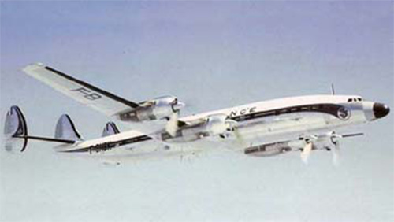

L-1649 Starliner

- Разработчик: Lockheed
- Страна: США
- Первый полет: 1956
- Тип: Дальнемагистральный пассажирский самолет
L-1649 Starliner — это популярный «констеллейшн», производимый корпорацией Lockheed, и один из последних поршневых авиалайнеров. Разработанный на основе L-1049 Super Constellation, он имеет полностью переработанное крыло и более мощный двигатель R350. Производство самолёта началось в 1956 году и продолжалось до 1995 года.
L-1649 Starliner использовался авиакомпаниями Lufthansa, Air France и Trans World Airlines. Самолёт имел максимальную вместимость 58 пассажиров и мог преодолевать расстояния до 6500 миль со скоростью 350 миль в час. Было построено около 44 таких самолётов.
| Летно технические характеристики | |
|---|---|
| Модификация | L-1649 |
| Размах крыла максимальный, м | 45.72 |
| Длина, м | 37.85 |
| Высота, м | 7.82 |
| Площадь крыла, м2 | 171.90 |
| Масса, кг | |
| - пустого самолета | 38674 |
| - нормальная взлетная | 72575 |
| Тип двигателя | 4 ПД Wright R-3350-988TC18EA12 Turbo Cyclone |
| Мощность номинальная, л.с. | 4 х 2850 |
| Крейсерская скорость, км/ч | 620 |
| Практическая дальность, км | 8710 |
| Практический потолок, м | 7620 |
| Экипаж, чел | 4+4 |
| Полезная нагрузка: | нормально - 80 пассажиров, максимально - 102 |